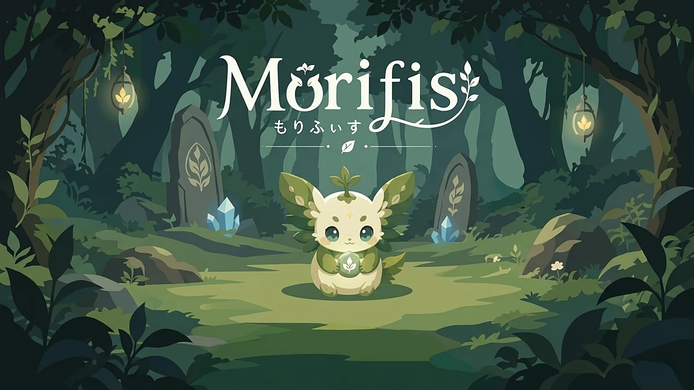
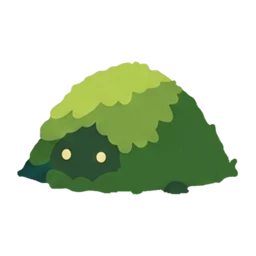
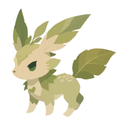
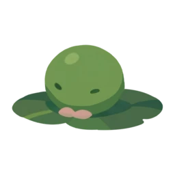
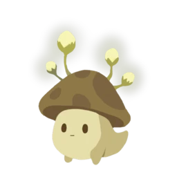
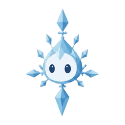

01
01
森をひらく
はじまりは、閉じた森。マナを使って森をひらくと、その跡が敵の通る道になる。肥えた土をひらくほど、森の仲間も目覚めます。

君がつくる、 世界に1つの森のダンジョン
iOS / Android / Web
配信準備中
閉じた森をマナでひらき、道をつくる。こもれび石を守りぬき、敵を森へ還す。 ——ルールはシンプル。でも「どこをひらくか」で、戦いはまるで変わります。
01
はじまりは、閉じた森。マナを使って森をひらくと、その跡が敵の通る道になる。肥えた土をひらくほど、森の仲間も目覚めます。
 02
02
ひらいた道のどこかに「こもれび石」を置く。入口から遠く、見つかりにくい場所に隠すほど、敵に気づかれにくく、守りやすくなります。
 03
03
敵は入口から侵入し、こもれび石を狙う。はな・ねっこと目覚めた仲間で迎え撃ち、石を持ち帰られる前に、すべて森へ還せば勝ちです。
肥えた土をひらくと、森の仲間「いぶき」が目覚める。出会ったいぶきは図鑑に集まり、育つとすがたを変えていく。

植物閉じた森からいぶきを吸い、近くの育つ仲間へ運ぶ。

ひかり低い攻撃力で、すばやく連続攻撃する。

水水に棲む丈夫な仲間。Lv.3になると、いぶきから子を増やす。

きのこ命中ごとに、敵の最大HPをうばう毒を与える。毒は重ねがけできる。
 岩獣
岩獣
敵を見つけると遠吠え、まわりの仲間の攻撃力を上げる。複数の遠吠えは乗算で重なる。

雪の精霊攻撃で敵の移動速度を下げる。鈍足は乗算で重なる。
——出会えるいぶきは約50種類。育てると、すがたも変わる。
 Lv.1ピカリ
Lv.1ピカリ Lv.2ツキタケ
Lv.2ツキタケ Lv.3ルミシエラ
Lv.3ルミシエラほかのいぶきは一本道で三段まで。竜だけは三つの系統に分かれ、それぞれがちがう姿へ育つ。
 Lv.1リーフル
Lv.1リーフル Lv.1ハナメ
Lv.1ハナメ Lv.1コモリ
Lv.1コモリ陽だまりの森から、水辺、こかげの奥、雪の森まで。ワールドごとに地形も、咲く草木も、攻めてくる相手も変わります。
横にスワイプ


iOS / Android / Web
本編は基本プレイ無料。配信開始までもう少しお待ちください。
公式サイトで、もっと見る →